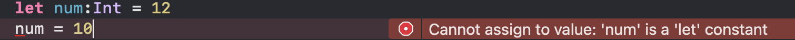

links
変数
変数とは値を保存するための箱のようなもので、変数に値を入れることで
値を再利用できます。
また、Swiftは静的型付け言語のため、
型宣言時に型を指定してあげなくてはいけません。
その変数の型に一致しない値を代入しようとした場合、コンパイルエラーとなってしまいます。
一方で変数に静的な型は存在せず、代入された値によってその変数の型が決まる言語のことを
動的型付け言語といい、代表的なものではPythonが挙げられます。
具体的な宣言方法
// var 変数名:型 = 値
var num:Int = 10
また、変数や定数の宣言時に型を宣言しなくても、型推論
という機能によって自動的に型が振り分けられます。
しかし、型推論を利用するためには、変数宣言時に値を代入している必要があります。
ここでは、Int型の変数numを宣言しています。
型については後で触れています。
その他の変数同士の演算や、代入、などは割愛します。
定数
定数とはほとんど変数と同じ機能を持っています。 唯一違う点は、再代入できない という違いです。一度値を持たされた定数に再度値を代入するとコンパイルエラーとなってしまいます。
具体的な宣言方法
// let 定数名:型名 = 値
let num:Int = 12
ここでこの定数numに値を再代入すると...
コンパイルエラーとなってしまいます。
基本的な型
Swiftが取り扱う基本的な型は以下の通りです。
| 型名 | 概要 |
|---|---|
| Int | 整数値を扱う |
| String | 文字列を扱う |
| Double | 64ビット浮動小数値を扱う |
| Float | 32ビット浮動小数値を扱う |
| Boolean | 真偽値を扱う |
| Any | 全ての値を扱う |
概要に書いてあるとおり、それぞれで扱うことのできる値が変わってきます。 またそれぞれの型にOptional型というものがあり、詳しくは次のセクションで 解説しています。
その値が何の型なのかを調べるときには
print(type(of: 任意の値))
を実行することで、その値の型を調べることができます。
結果↓
Optional型
Optional型とは何も値が入っていない状態(nil値)を許容する型です。 通常の型にnil値を入れるとコンパイルエラーとなってしまうため、 nil値が入ると思われるところに使用します。
Optional型として変数・定数を宣言する場合は Optinal<型名>もしくは型名?とすることで宣言できます。
具体的な宣言方法
var optionalNum:Optional<Int> = 12
let optionalStr:String? = nil
ただしOptional型はnil値を許容しているため、演算をすることができません。 そこで、演算を行うためにはOptional型から値を取り出すアンラップ を行う必要があります。
アンラップの方法には以下の3つがあります。
- if-let文を使ったアンラップ
- ??演算子を使ったアンラップ
- 強制アンラップ
if-let文を使ったアンラップ
if-let分を使用することでOptional型をアンラップすることができます。
文法
let opInt:Optional<Int> = 12
// if let 変数名 = Optional型の変数
if let int = opInt{
// アンラップ成功時に実行したい処理
}
ここでアンラップした先の変数intのスコープはif-let文内となるため、文の外では利用できません。
(スコープとはその変数にアクセスできる範囲のこと)
また、通常のif文と同じく、文末にelseを追加することで、アンラップに失敗したときの処理を 追加することができます。
let opStr:Optional<String> = nil
if let str = opStr{
// アンラップ成功時の処理
}else{
// アンラップ失敗時の処理
}
??演算子を使ったアンラップ
アンラップ先の変数・定数宣言時に??演算子を用いることでアンラップを行うことができます。
文法
var opInt:Optional<Int> = 12
// var 変数名:型名 Optional型の変数 ?? アンラップしたい型の具体的な値
var int:Int = opInt ?? 0
print(int) // 12
opInt = nil
int = opInt ?? 100
print(int) //100
??演算子を使ったアンラップは、Optional型の値がnil値でない場合は アンラップされた値が代入され、nil値の場合は??演算子のうしろについている 具体的な値が代入されます。これにより、代入先にnil値が入らないことを 保証しています。
強制アンラップ
強制アンラップとは、Optioanl型にnil値が入っている状態を考えず、すぐに
アンラップを行う手法です。
強制アンラップはOptional型の変数の後ろに「!」をつけることで行えます。
文法
var a:Optional<Int> = 12
var b:Optional<Int> = 2
print(a! + b!) //14
このように、Optional型の変数から直接値を取り出せます。しかし この方法はOptional型の変数がnil値だった場合エラーとなる危険性があるので、使う場面をより慎重に考え、 適切に使用しなければなりません。乱用は避けましょう。
nil値が入っているときに、強制アンラップを行った場合
型のキャスト
キャストとは現在の型を別の型として扱う手法のことを言い、 アップキャストと ダウンキャストの二つがある。
アップキャスト
アップキャストとは階層関係にある具体的な値を、上位の抽象的な値に変換することを言う。 キャストには「as」を使用する。
文法
var str:String = "aaa" // 具体的な型(String)
var any:Any = str as Any // 上位の抽象的な型(Any)
ダウンキャスト
もう一つのダウンキャストは、アップキャストとは反対に上位の抽象的な 型を下位の具体的な型に変換することを言います。また、ダウンキャストされた値は オプショナル型となる。キャストには「as?」「as!」を使用する。 しかし、「as!」はダウンキャストと同時に強制アンラップを行うため、 キャスト元にnil値が入っているとエラーとなる。扱いには注意が必要。
var any:Any = 12 // 抽象的な型
var opInt:Int? = any as? Int? // Optinal(12)
any = nil
opInt = any as? Int? //nil
var int:Int = any as! Int // キャストもとにnil値が入っているのでエラー
配列
配列とは、変数の寄せ集めのような構造のデータ。 使用方法はPythonやほかの言語と大差ないが、宣言方法が独特である。 for文と組み合わせて使用することもできる。 Optional型として宣言することも可能。
具体的な宣言方法
// var 変数名:Array<任意の型名> = [値, 値, 値.....]
var numArray:Array<Int> = [1, 2, 3, 4, 5, 6]
print(numArray[2]) // 3
他にも「追加」「挿入」「結合」「削除」が可能。
追加
配列.append(値)で指定した配列に値を追加することができる。
文法
// 配列.append(値)
var opStrArray:Array<String?> = ["A", "B", "C", "E"]
opStrArray.append(nil) // ["A", "B", "C", "E", nil]
挿入
配列.insert(値, at:インデックス)で、指定した配列の指定したインデックスに値を追加することができる。
文法
// 配列.insert(値, at:インデックス)
var anyArray:Array<Any> = [1, "aa", 1.5, True]
anyArray.insert(2, at:1) // [1, 2, "aa", 1.5, True]
結合
配列 + 配列とすることで配列同士を結合することができる。感覚的には文字列結合に近い
※型は統一されていないとエラーとなる。
文法
// 配列 + 配列
var array1 = [1, 2, 3, 4]
var array2 = [6, 7, 8, 9]
var array3 = array1 + array2
print(arrray3) // [1, 2, 3, 4, 6, 7, 8, 9]
削除
配列.remove(at:インデックス)とすることで指定した配列の指定したインデックスの値を削除することができる。
文法
// 配列.remove(at:インデックス)
var opIntArray: Array<Optional<Int>> = [1, 2, nil, 4]
opIntArray.remove(at: 2) // [1, 2, 4]
辞書
辞書とは、キーとそのキーに対応した値を集めたデータのことを言う。
具体的な宣言方法
// var 変数名:Dictionaly<キーの型, 値の型> = [キー:値, キー:値, キー:値...]
var dict:Dictionaly<Int, String> = [1 : "佐藤", 2 : "鈴木", 3 : "田中"]
辞書のキーを指定することで、それに対応した値を取り出すことができる。 この取り出した値は、Optional型となって返ってくる。また、存在しない キーを指定した場合は、nil値が返ってくる。Optional型である理由は ここにあるのかもしれない。
// 辞書名[キー]
var dict:Dictionaly<Int, String> = [1 : "佐藤", 2 : "鈴木", 3 : "田中"]
var opName:Optional<String>
opName = dict[2] // Optional("鈴木")
opName = dict[9] // nil
また、辞書にも「追加」「更新」「削除」の機能がある。
追加
値を追加したい場合は存在しないキーに値を代入する。
文法
// 辞書名[存在しないキー] = 追加したい値
var dict:Dictionaly<Int, String> = [1 : "佐藤", 2 : "鈴木", 3 : "田中"]
dict[4] = "高橋"
print(dict) // [1 : "佐藤", 2 : "鈴木", 3 : "田中", 4 : "高橋"]